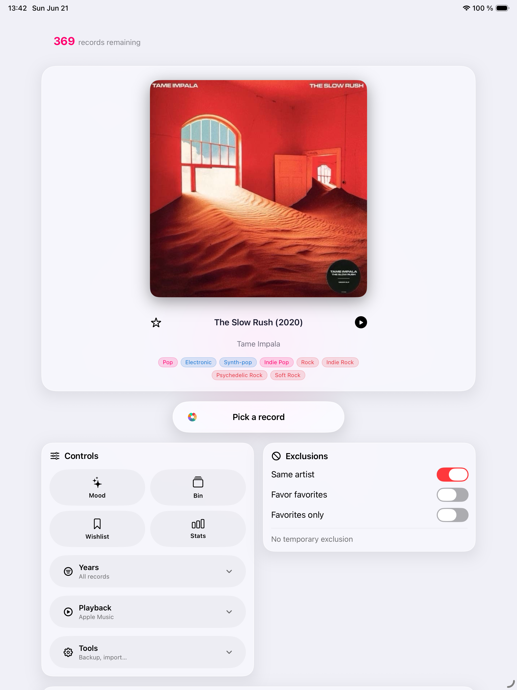
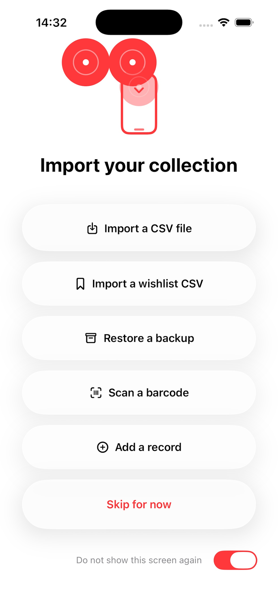
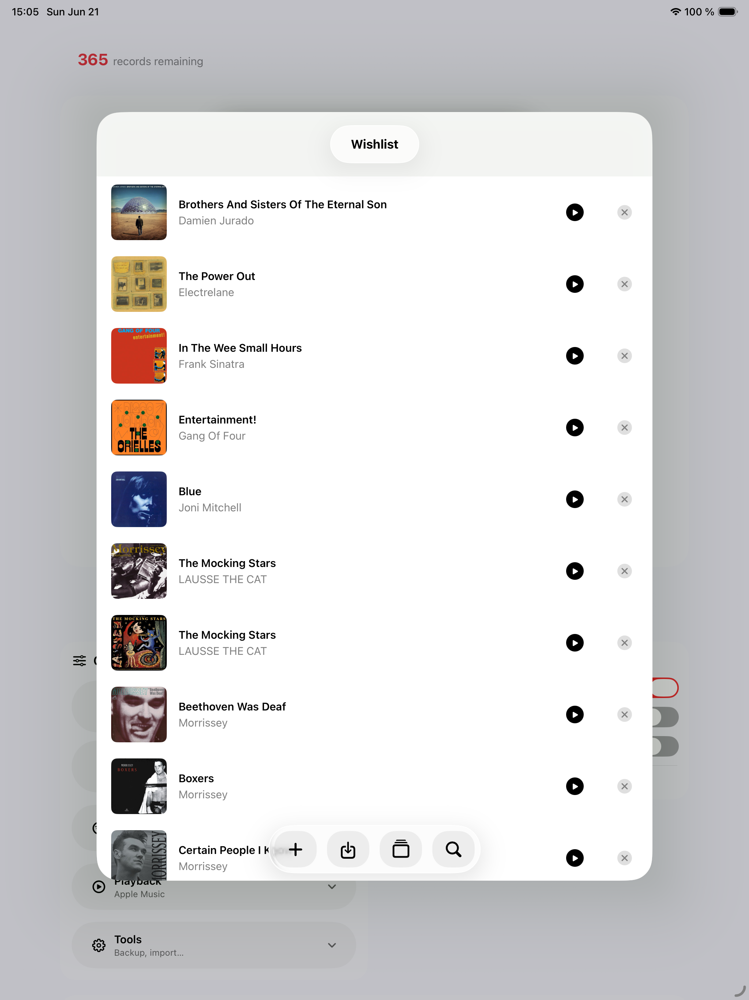
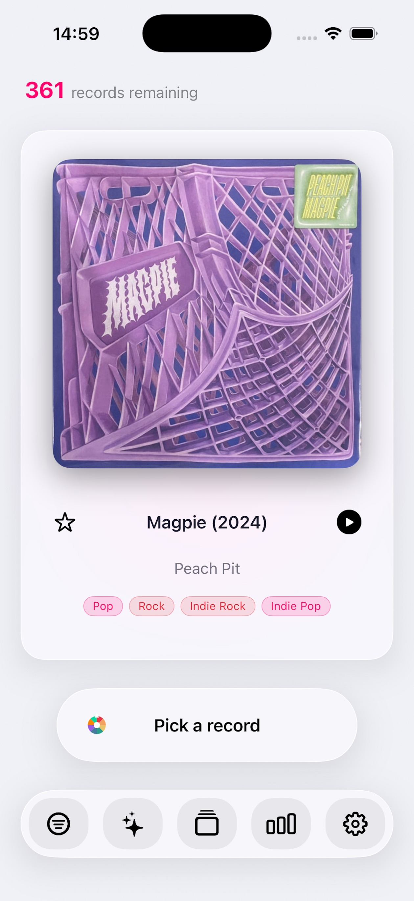

Kontrollert tilfeldig valg
Velg et tilgjengelig album, unngå å gjenta samme artist, prioriter favoritter og hold midlertidige utelukkelser under kontroll.
Lur aldri mer på hvilken plate du skal spille nå
Gjenoppdag musikksamlingen med smarte tilfeldige valg, oversiktlig platekasse, ønskeliste, statistikk og import-/eksportverktøy for samlere.

Record Picker
Record Picker katalogiserer vinyl, CD-er og favorittalbum og foreslår deretter neste plate basert på filtre, favoritter, utelukkelser og stemning.

Velg et tilgjengelig album, unngå å gjenta samme artist, prioriter favoritter og hold midlertidige utelukkelser under kontroll.
Bla gjennom samlingen med søk, sortering, filtre, store omslag og rask tilgang til redigerbare platedetaljer.
Velg etter stemning og behold en lyttehistorikk slik at samlingen fortsetter å åpne seg over tid.
CSV-import, sikkerhetskopier, gjenoppretting, MusicBrainz, Discogs og omslagssøk startes alltid bevisst.
App Store
Notater hentet fra den franske App Store-oppføringen for Record Picker 18. juni 2026.
18. juni 2026
17. juni 2026
Supportsiden svarer raskt om import, sikkerhetskopier, eksterne oppslag, personvern og direkte kontakt.
Åpne kundestøtte
CSV-import, gjenoppretting av sikkerhetskopi, strekkodeskanning og manuell registrering hjelper deg i gang selv med en ufullstendig katalog.
Sikkerhetskopier og lesbare CSV- og JSON-eksporter startes bevisst av brukeren og lagres til valgt mål.
MusicBrainz, Discogs og Cover Art Archive brukes bare når et oppslag eller en berikelse startes.
Record Picker har ingen brukerkonto, ingen reklame, intet datasalg og ingen Record Picker-server som lagrer samlingen.

Albumene du legger til, importerer, redigerer, favorittmerker, utelukker eller velger, lagres på enheten. Dette kan inkludere albumtitler, artister, utgivelsesinformasjon, sjangre, stiler, tagger, notater, lyttehistorikk, omslag og samlingsmetadata.
Record Picker bruker ikke et kontosystem og laster ikke opp samlingen din til en Record Picker-server.
Record Picker kan bruke kameraet til å skanne strekkoder når du velger å legge til et album slik. Kamerabilder lagres eller deles ikke.
Når du starter et metadata- eller omslagssøk, kan Record Picker kontakte eksterne tjenester som MusicBrainz, Cover Art Archive eller Discogs.
Disse forespørslene kan inneholde søkeord eller strekkoden du oppgir. De sendes bare når du uttrykkelig starter oppslaget.
Record Picker kan bruke Apples modeller på enheten, når de er tilgjengelige, til å foreslå album etter stemning. Hvis ikke beregnes forslag lokalt fra metadata, favoritter, tagger, sjangre, stiler og nylige valg.
Hvis du bruker Apple Watch-følgeappen, kan Record Picker synkronisere viktig samlings- og valginformasjon mellom iPhone og Apple Watch via Apples enhetskommunikasjon.
Record Picker kan la deg importere, eksportere, sikkerhetskopiere eller gjenopprette samlingsfiler. Disse filene opprettes, velges og administreres av deg.
Record Picker bruker ikke annonsesporing og inneholder ikke tredjeparts annonse-SDK-er.
Hvis du har spørsmål om denne personvernerklæringen, kontakt support@recordpicker.app.
Skjermbilder
iPhone-skjermbildet supplerer iPad-visningen på forsiden uten å bruke samme bilde to ganger.

Vinylguider
Tre fokuserte guider svarer på vanlige samlerspørsmål: hva du skal spille nå, hvordan bruke en nyttig tilfeldig velger og hvordan holde en samling levende.
Vinylguide
En praktisk guide til å velge hvilken vinylplate du skal spille neste gang uten å stirre for lenge på hyllen.
Tilfeldig velger
Hvorfor en tilfeldig vinylvelger fungerer best når den respekterer filtre, favoritter, utelukkelser og lyttekontekst.
Vinylsamling
En praktisk guide til å katalogisere, berike, sikkerhetskopiere og gjenoppdage en vinylsamling med Record Picker.
For spørsmål om appen, import, sikkerhetskopier eller personvern kan du bruke den offentlige supportkontakten.